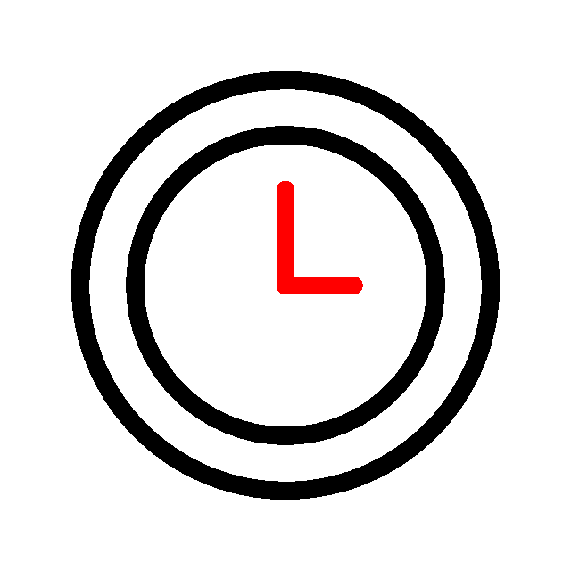
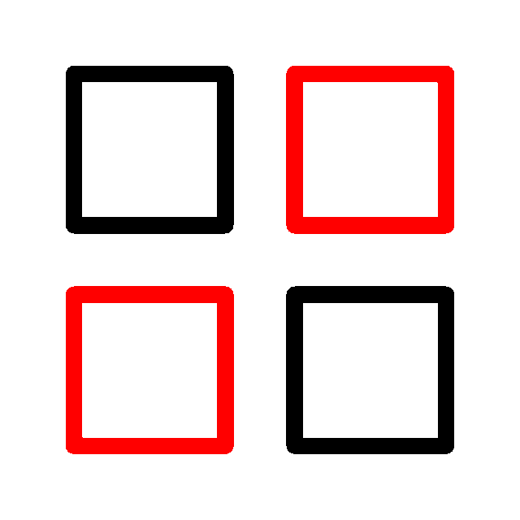

.png)
Estrutura do curso
Modalidade Autoinstrucional

30 horas de carga horária

4 módulos
MÓDULO 1
O que são as leishmanioses?
- Aula 1: O que são as leishmanioses?
- Aula 2: Leishmanioses: as espécies do protozoário, seus vetores e suas manifestações clínicas no homem
- Aula 3: Distribuição geográfica das leishmanioses
- Aula 4: Cadeia de transmissão das leishmanioses
- Aula 5: Vetores das leishmanioses
- Aula 6: Ciclo do flebotomíneo
MÓDULO 2
Patogenia e manifestações clínicas
- Aula 1: Patogenia e manifestações clínicas
- Aula 2: Diagnóstico laboratorial da leishmaniose tegumentar
- Aula 3: Diagnóstico da leishmaniose visceral humana
- Aula 4: Diagnóstico da leishmaniose visceral canina
- Aula 5: Tratamento
- Aula 6: Vigilância epidemiológica do cão
- Aula 7: Importância do manejo ambiental
- Aula 8: Controle do reservatório canino e eutanásia dos animais infectados
MÓDULO 3
Fatores físicos e sociais que contribuem para a mudança do cenário
- Aula 1: Fatores físicos e sociais que contribuem para a mudança do cenário da dispersão, agravamento das leishmanioses e como consequência no processo de transmissão
- Aula 2: Processo de urbanização
- Aula 3: Ciclos de transmissão das leishmanioses
- Aula 4: Medidas de controle e prevenção das leishmanioses
MÓDULO 4
Conceito de Saúde Única
Atenção
Recomendamos que o curso seja realizado linearmente, pois a sequência das aulas facilita o entendimento sobre o material apresentado.